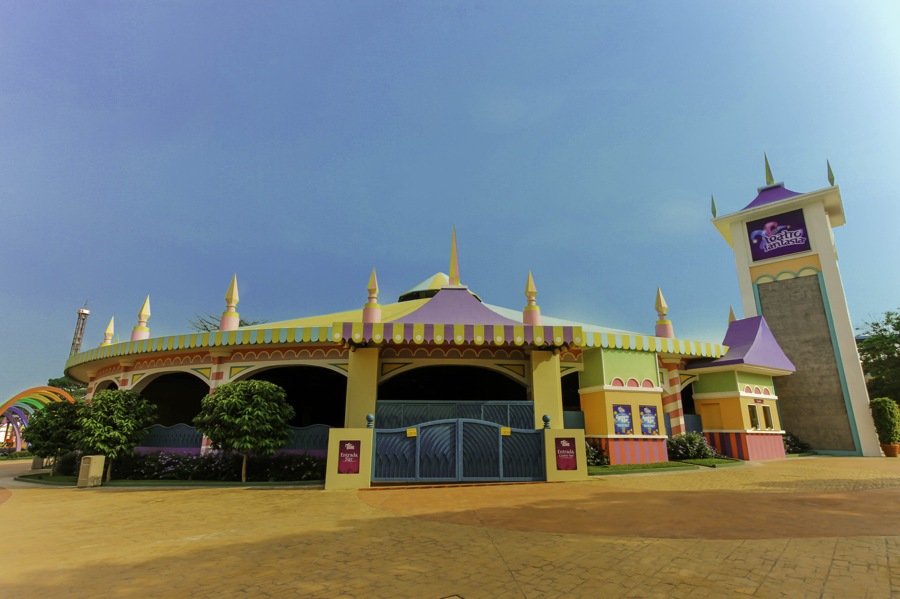

La antigua ciudad Maya de Tikal, ubicada en el municipio de Flores, departamento de Petén, constituye el asentamiento prehispánico más extenso en Guatemala, cuya población pudo haber alcanzado los 100,000 habitantes durante su época de mayor esplendor. Tikal cuenta con alrededor de 5,000 edificios prehispánicos en un área de aproximadamente 16 km², de los cuales únicamente el 5% se encuentra restaurado y habilitado para su visitación.
Conoce mas de tikal aqui
Fundada el 10 de marzo de 1543, La Antigua Guatemala fue declarada Patrimonio Cultural de la Humanidad por la Unesco en el año 1979. Esta bella y mágica ciudad colonial guarda casi quinientos años de historia, con un clima privilegiado y una excepcional vista hacia los volcanes de Fuego y Acatenango.
El Volcán de Fuego se encuentra entre los departamentos de Chimaltenango, Escuintlay Sacatepéquez, en la República de Guatemala. Este coloso se caracteriza principalmente por ser uno de los volcanes activos del país.

Acá te contamos la historia del Irtra Mundo Petapa, un parque de diversiones en la Ciudad de Guatemala que desde hace más de 40 años ha sido visitado por los guatemaltecos y extranjeros que quieran pasar un día alegre en compañía de amigos y familiares.
Este lugar ha ido evolucionando con el paso del tiempo, ofreciendo juegos mecánicos, piscinas y restaurantes sin salir de la capital.
